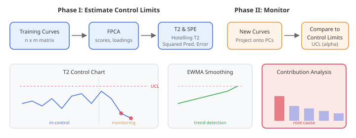
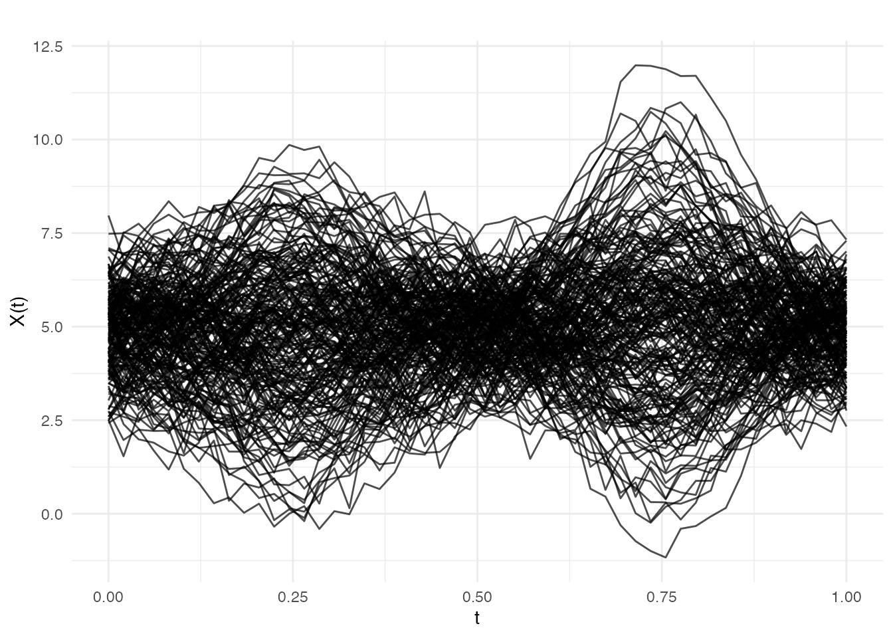
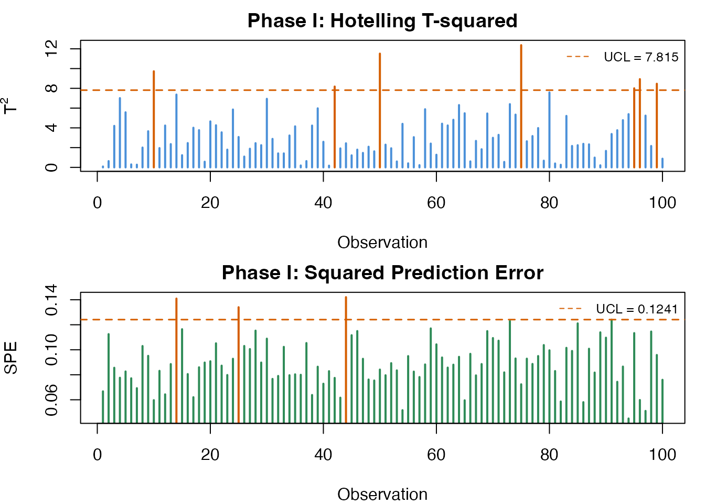
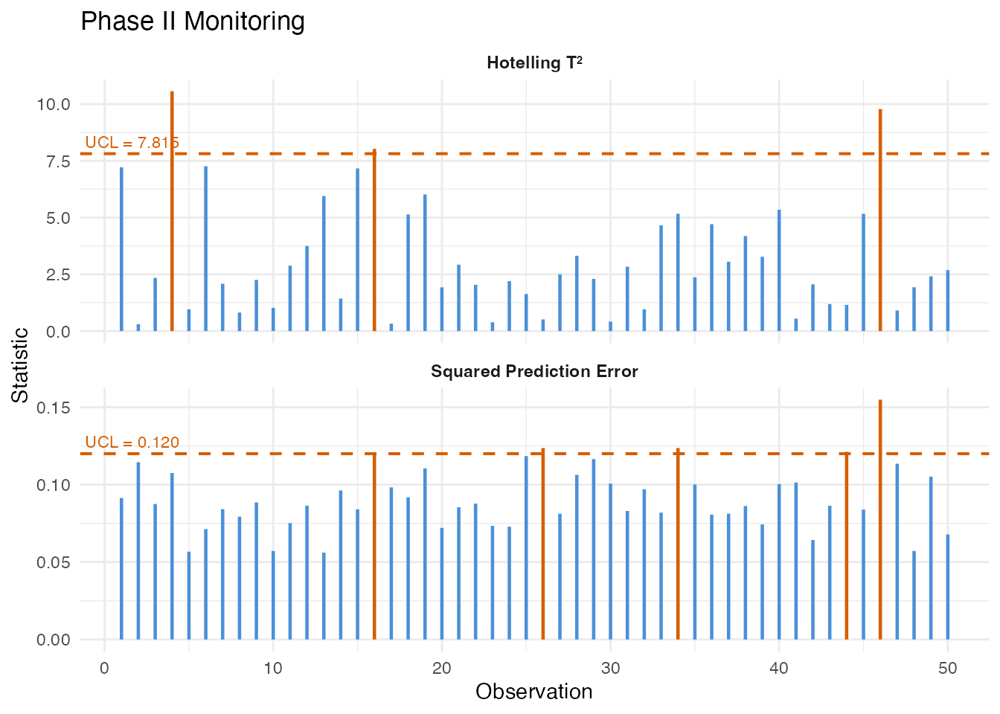
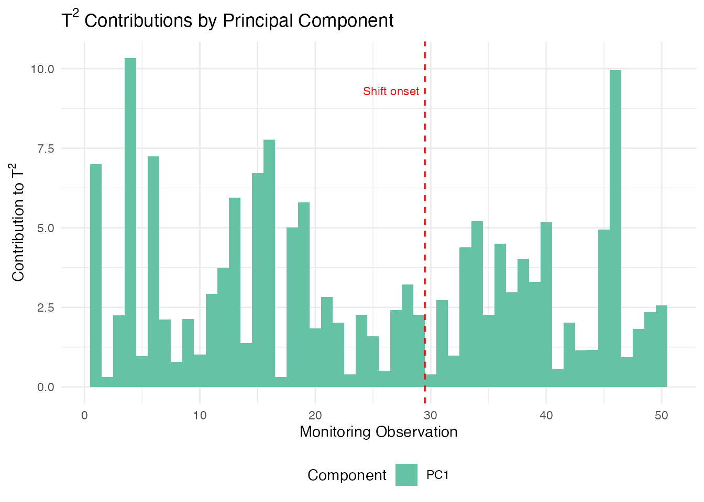
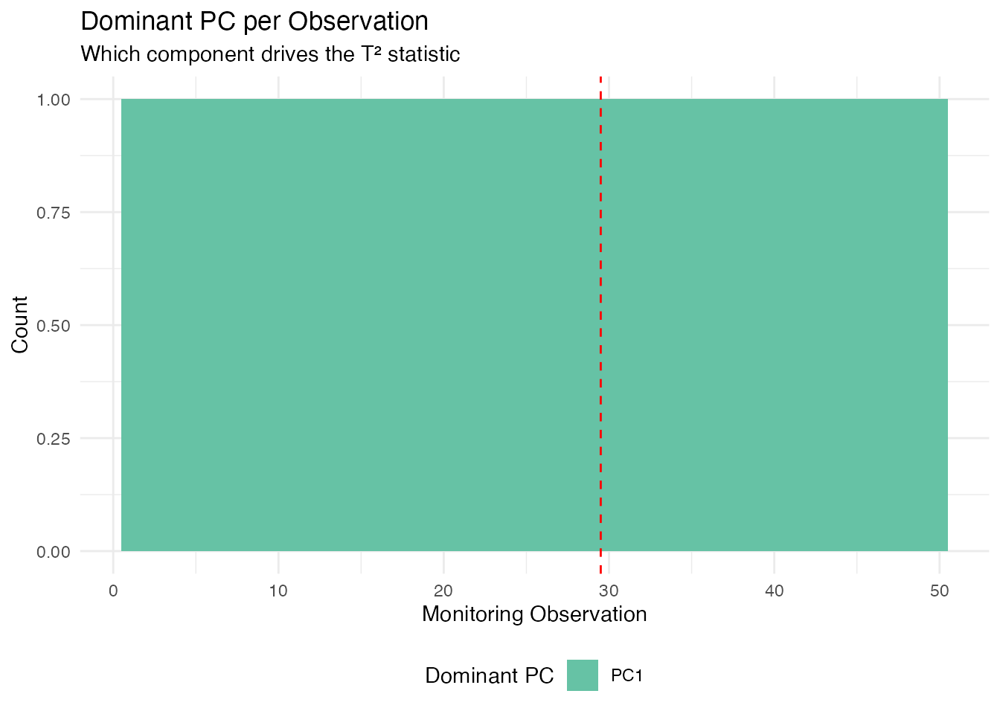

Statistical Process Monitoring for Functional Data
Source:vignettes/articles/statistical-process-monitoring.Rmd
statistical-process-monitoring.RmdIntroduction
Statistical Process Monitoring (SPM) extends classical control charts to functional data. When the “quality characteristic” is an entire curve (e.g., a spectral profile, a temperature trajectory, or a process signature), univariate control charts on summary statistics lose information. Functional SPM monitors the full curve structure.

The workflow has two phases:
Phase I — Estimate the in-control process using historical “good” data: perform FPCA, compute Hotelling and Squared Prediction Error (SPE) statistics, and set control limits.
Phase II — Monitor new observations by projecting onto the Phase I principal components and comparing statistics to the control limits. Alarms fire when a statistic exceeds its Upper Control Limit (UCL).
When to Use Functional SPM
| Scenario | Method |
|---|---|
| Single functional quality variable |
spm.phase1() + spm.monitor()
|
| Multiple functional variables |
mf.spm.phase1() + mf.spm.monitor()
|
| Detecting gradual drifts | spm.ewma() |
| Process with known covariates |
frcc() + frcc.monitor()
|
| Diagnosing alarm root cause | spm.contributions() |
Simulating Process Data
We simulate semiconductor wafer thickness profiles: each curve is a spectral measurement across the wafer surface. Phase I uses 200 in-control profiles; Phase II introduces a shift at observation 30.
set.seed(42)
m <- 50 # grid points
t_grid <- seq(0, 1, length.out = m)
# In-control process: smooth curves with random variation
n_ic <- 200 # Phase I observations
X_ic <- matrix(0, n_ic, m)
for (i in seq_len(n_ic)) {
scores <- rnorm(3, sd = c(2, 1, 0.5))
X_ic[i, ] <- 5 + scores[1] * sin(2 * pi * t_grid) +
scores[2] * cos(4 * pi * t_grid) +
scores[3] * sin(6 * pi * t_grid) +
rnorm(m, sd = 0.3)
}
# Phase II: 50 observations, shift at observation 30
n_new <- 50
X_new <- matrix(0, n_new, m)
for (i in seq_len(n_new)) {
scores <- rnorm(3, sd = c(2, 1, 0.5))
shift <- if (i >= 30) 1.5 * sin(2 * pi * t_grid) else 0
X_new[i, ] <- 5 + scores[1] * sin(2 * pi * t_grid) +
scores[2] * cos(4 * pi * t_grid) +
scores[3] * sin(6 * pi * t_grid) +
shift + rnorm(m, sd = 0.3)
}
fd_ic <- fdata(X_ic, argvals = t_grid)
fd_new <- fdata(X_new, argvals = t_grid)
plot(fd_ic, main = "Phase I: In-Control Profiles",
xlab = "Measurement Position", ylab = "Thickness")
Phase I: Estimating Control Limits
spm.phase1() performs FPCA on the in-control data,
computes
and SPE statistics for each training observation, and estimates control
limits at significance level
.
chart <- spm.phase1(fd_ic, ncomp = 3, alpha = 0.05, seed = 42)
print(chart)
#> SPM Control Chart (Phase I)
#> Components: 3
#> Alpha: 0.05
#> T2 UCL: 7.815
#> SPE UCL: 0.1241
#> Observations: 200
#> Grid points: 50
#> Eigenvalues: 81.71, 24.00, 5.41The returned spm.chart object contains:
-
T2 control limit — based on the
-distribution
with
ncompandn - ncompdegrees of freedom - SPE control limit — estimated from the empirical distribution of Phase I SPE values
- Phase I statistics — and SPE for each training observation (useful for checking that Phase I data is truly in-control)
plot(chart)
Phase II: Online Monitoring
Project new observations onto the Phase I principal components and compare to control limits:
monitor <- spm.monitor(chart, fd_new)
print(monitor)
#> SPM Monitoring Result (Phase II)
#> Observations: 50
#> T2 alarms: 2 of 50 (4%)
#> SPE alarms: 2 of 50 (4%)
#> T2 UCL: 7.815
#> SPE UCL: 0.1241
# Which observations triggered alarms?
alarm_idx <- which(monitor$t2.alarm | monitor$spe.alarm)
cat("Alarms at observations:", alarm_idx, "\n")
#> Alarms at observations: 4 25 46
plot(monitor)
The monitoring result contains:
| Field | Description |
|---|---|
t2 |
Hotelling values for each new observation |
spe |
SPE values for each new observation |
t2.alarm |
Logical: did exceed the UCL? |
spe.alarm |
Logical: did SPE exceed the UCL? |
scores |
PC scores for the new observations |
EWMA Monitoring
The Exponentially Weighted Moving Average (EWMA) chart smooths the monitoring statistics over time, making it more sensitive to small, persistent shifts than the standard Shewhart-type chart:
ewma_result <- spm.ewma(chart, fd_new, lambda = 0.2, alpha = 0.05)
cat("EWMA T2 alarms:", sum(ewma_result$t2.alarm), "\n")
#> EWMA T2 alarms: 6
cat("EWMA SPE alarms:", sum(ewma_result$spe.alarm), "\n")
#> EWMA SPE alarms: 2The smoothing parameter controls the memory: - gives the standard Shewhart chart (no smoothing) - (default) gives moderate smoothing - Smaller detects smaller shifts but responds more slowly
Multivariate FPCA
When multiple functional variables are measured simultaneously (e.g., temperature, pressure, and flow rate profiles), Multivariate FPCA extracts joint modes of variation across all variables:
# Simulate two correlated functional variables
fd_var1 <- fdata(X_ic, argvals = t_grid)
fd_var2 <- fdata(X_ic + matrix(rnorm(n_ic * m, sd = 0.5), n_ic, m),
argvals = t_grid)
mfpca_result <- mfpca(list(fd_var1, fd_var2), ncomp = 3)
cat("Eigenvalues:", round(mfpca_result$eigenvalues, 3), "\n")
#> Eigenvalues: 69.642 18.471 4.308The result contains joint scores and per-variable eigenfunctions,
which can be used for multivariate SPM via
mf.spm.phase1().
Contribution Diagnostics
When an alarm fires, the next question is: what went wrong? Contribution analysis decomposes the aggregate and SPE statistics into per-variable (or per-grid-region) contributions, pinpointing which part of the curve triggered the alarm.
T-squared Contributions
contributions break down the Hotelling statistic into additive terms, one per principal component. A large contribution from PC means that the curve’s score on the -th eigenfunction is unusually far from the in-control mean. This tells you which mode of variation shifted:
# T2 contributions: one value per PC per observation
t2_contrib <- spm.contributions(monitor$scores,
chart$eigenvalues,
grid.sizes = c(m),
type = "t2")
# Identify the first alarming observation
alarm_idx <- which(monitor$t2.alarm | monitor$spe.alarm)
first_alarm <- alarm_idx[1]
cat("First alarm at observation:", first_alarm, "\n")
#> First alarm at observation: 4
cat("T2 contributions (per PC):", round(t2_contrib[first_alarm, ], 3), "\n")
#> T2 contributions (per PC): 10.813
# Visualize T2 contributions for all monitoring observations
n_mon <- nrow(t2_contrib)
n_pc <- ncol(t2_contrib)
df_t2 <- data.frame(
obs = rep(seq_len(n_mon), n_pc),
contribution = as.vector(t2_contrib),
pc = factor(rep(paste0("PC", seq_len(n_pc)), each = n_mon))
)
ggplot(df_t2, aes(x = obs, y = contribution, fill = pc)) +
geom_col(position = "stack", width = 1) +
geom_vline(xintercept = 29.5, linetype = "dashed", color = "red", linewidth = 0.5) +
annotate("text", x = 29.5, y = max(rowSums(t2_contrib)) * 0.9,
label = "Shift onset", hjust = 1.1, color = "red", size = 3) +
scale_fill_brewer(palette = "Set2") +
labs(title = expression("T"^2 * " Contributions by Principal Component"),
x = "Monitoring Observation", y = expression("Contribution to T"^2),
fill = "Component") +
theme(legend.position = "bottom")
Since we injected a shift in the first eigenfunction direction (), PC 1 should dominate the contributions after the shift onset at observation 30.
Identifying the Dominant Component
We can extract which principal component drives the alarm for each observation. This is especially useful for directing root-cause investigation:
# Which PC has the largest T2 contribution per observation?
dominant_pc <- apply(t2_contrib, 1, which.max)
df_dom <- data.frame(
obs = seq_len(nrow(t2_contrib)),
dominant = factor(paste0("PC", dominant_pc)),
alarm = monitor$t2.alarm | monitor$spe.alarm
)
ggplot(df_dom, aes(x = obs, fill = dominant)) +
geom_bar(width = 1) +
geom_vline(xintercept = 29.5, linetype = "dashed", color = "red") +
scale_fill_brewer(palette = "Set2") +
labs(title = "Dominant PC per Observation",
subtitle = "Which component drives the T\u00b2 statistic",
x = "Monitoring Observation", y = "Count",
fill = "Dominant PC") +
theme(legend.position = "bottom")
After the shift onset (observation 30), PC 1 dominates because we injected a shift aligned with the first eigenfunction ().
Interpreting Contributions in Practice
| Diagnostic | What it tells you | Typical action |
|---|---|---|
| T2 dominated by PC 1 | Shift in the dominant mode of variation | Check for process mean shift |
| T2 dominated by higher PCs | Shift in a minor mode | Check for subtle process changes |
| SPE spike in a specific region | New variation not in the model | Inspect that region for sensor fault |
| SPE uniformly elevated | Global model inadequacy | Consider adding more PCs |
In a multi-variable setting (using mf.spm.phase1()), the
contributions are further broken down by variable, allowing you to
identify which sensor or measurement channel is responsible for the
alarm.
Comparison of Methods
| Method | Detects | Best for |
|---|---|---|
| T2 | Mean shifts in the PC score space | Location changes in dominant modes |
| SPE | Changes not captured by the PCs | New types of variation, sensor drift |
| EWMA | Small persistent shifts | Gradual process degradation |
| FRCC | Shifts in the relationship between curves and covariates | Regression-based monitoring |
See Also
-
vignette("articles/fpca")— Functional PCA fundamentals -
vignette("articles/streaming-depth")— Online depth-based monitoring -
vignette("articles/outlier-detection")— Depth-based outlier detection
References
- Colosimo, B.M. and Pacella, M. (2010). A comparison study of control charts for statistical monitoring of functional data. International Journal of Production Research, 48(6), 1575–1601.
- Paynabar, K., Jin, J., and Pacella, M. (2013). Monitoring and diagnosis of multichannel nonlinear profiles using uncorrelated multilinear principal component analysis. IIE Transactions, 45(11), 1235–1247.
- Grasso, M., Colosimo, B.M., and Pacella, M. (2014). Profile monitoring via sensor fusion: the use of PCA methods for multi-channel data. International Journal of Production Research, 52(20), 6110–6135.